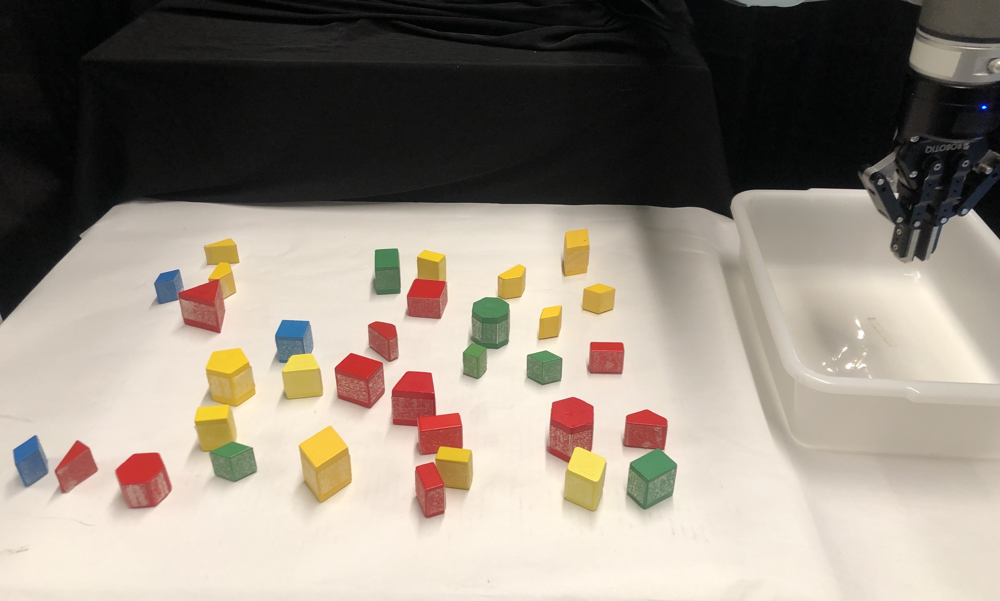
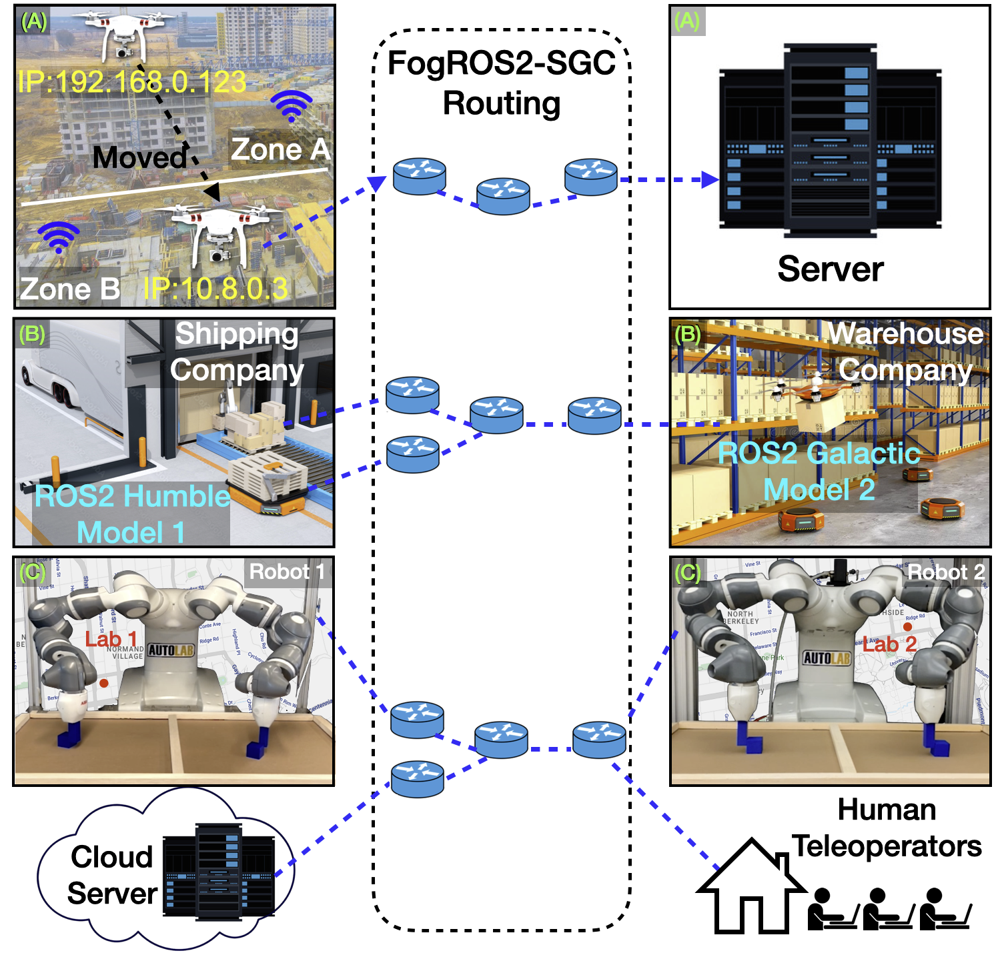
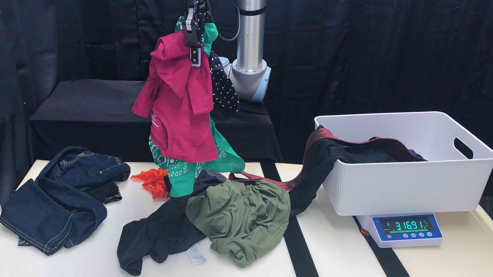
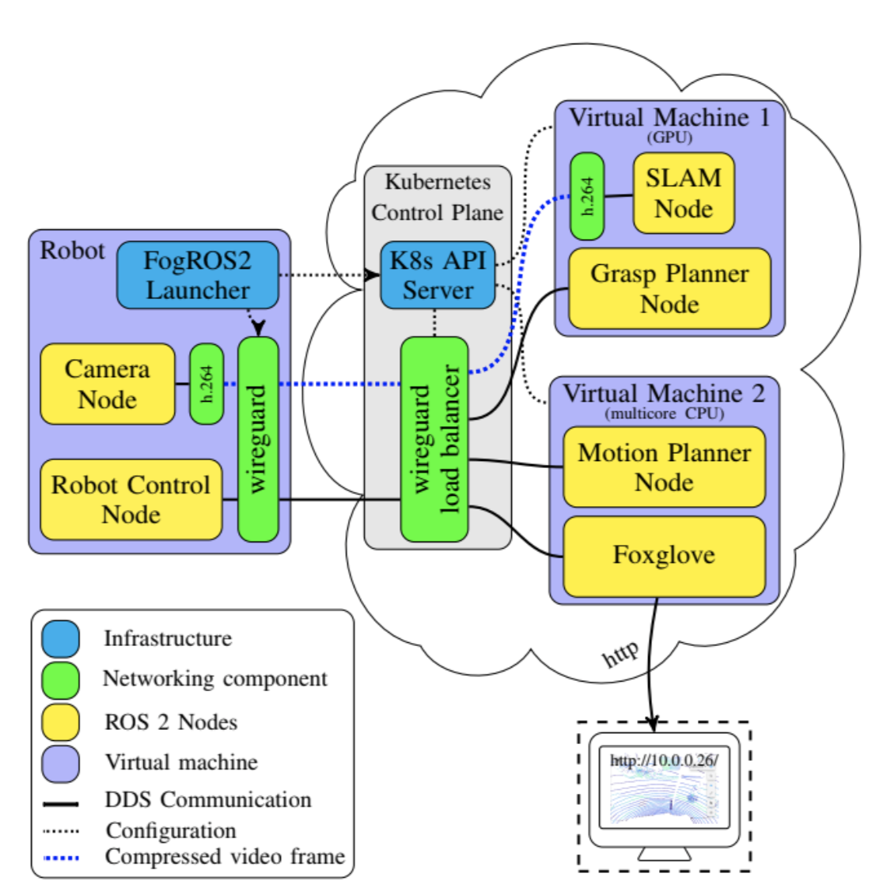

Hello! I am a senior at UC Berkeley majoring in Electrical Engineering and Computer Science. I am passionate about robotics and I currently do research in Berkeley Artificial Intelligence Research under Prof. Ken Goldberg.
Learn more about me and the work I am doing below!
Summer 2022 Software Engineering Intern @ Nextdoor: I joined Nextdoor's Machine Learning team where I helped strengthen a Natual Language Processing model and helped build an API for feature retrieval.
Summer 2021 Software Engineering Intern @ BlackRock: I was a part of Blackgrock's Alladin Product group where I was put in the Tick Data Analytics team and I helped build a new infrastructure that would allow employees to get fast and new information on Broker Axe data from the financial market.
Research
Most of my work so far has related to Multi-Object Grasping and robotic cloud computing. However, the most recent project I am working on is related to Full-Body Control on a Quadruped.

Push-MOG: Efficient Pushing to Consolidate Polygonal Objects for Multi-Object Grasping
Shrey Aeron,
Edith Llontop,
Aviv Adler,
Wisdom C. Agboh,
Mehmet Dogar,
and Ken Goldberg
Under Review at CASE 2023
We present Push-MOG, an algorithm that creates efficient object clusters, plans stable pushes to rearrange objects within those clusters, and generates multi-object grasps for the rearranged object clusters.

FogROS2-SGC: A ROS2 Cloud Robotics Platform for Secure Global Connectivity
Kaiyuan Chen, Ryan Hoque, Karthik Dharmarajan, Edith LLontop, Simeon Oluwafunmilore Adebola, Jeffrey Ichnowski, John Kubiatowicz, Ken Goldberg
Under Review at IROS 2023
FogROS2-SGC is an extension of FogROS2 that can securely and effectively connect robot systems across different physical locations, networks, and Data Distribution Services (DDS).

The Teenager’s Problem: Efficient Garment Decluttering Using Heap Consolidation
Wisdom C. Agboh, Edith LLontop, Ayah Ahmed, Mehmet Dogar, Ken Goldberg
Under Review at RSS 2023
We propose analytical and learned policies to generate grasps for multiple garments in order to consolidate small heaps into larger ones.

FogROS2: An Adaptive Platform for Cloud and Fog Robotics Using ROS 2
Jeffrey Ichnowski*, Kaiyuan Chen*, Karthik Dharmarajan, Simeon Adebola, Michael Danielczuk, Victor Mayoral-Vilches, Nikhil Jha, Hugo Zhan, Edith LLontop, Derek Xu, John Kubiatowicz, Ion Stoica, Joseph Gonzalez, and Ken Goldberg
Accepted at ICRA 2022 Project Github /
arXiv
FogROS2 extends ROS2 to allow robots to access cloud computing on demand. FogROS2 was added to the official distribution of ROS 2, gaining performance, timing, and ad- ditional improvements associated with ROS 2
{kind=link}